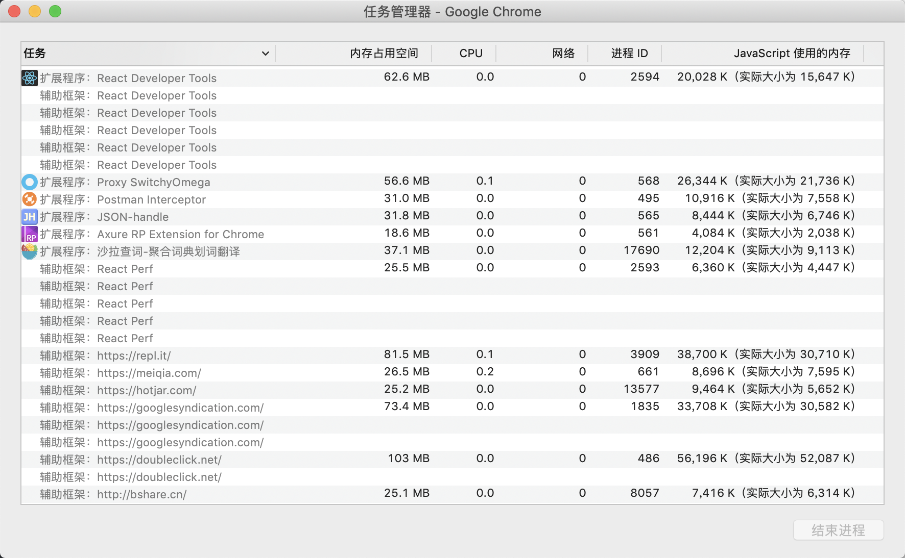
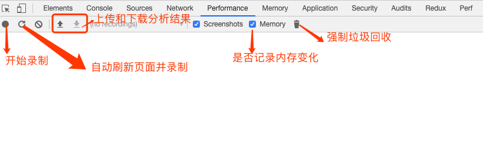
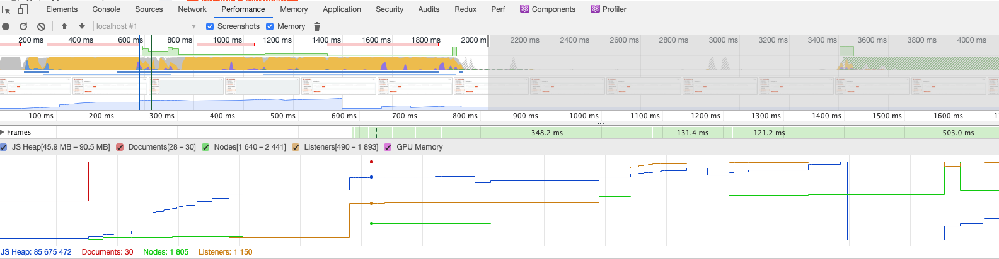
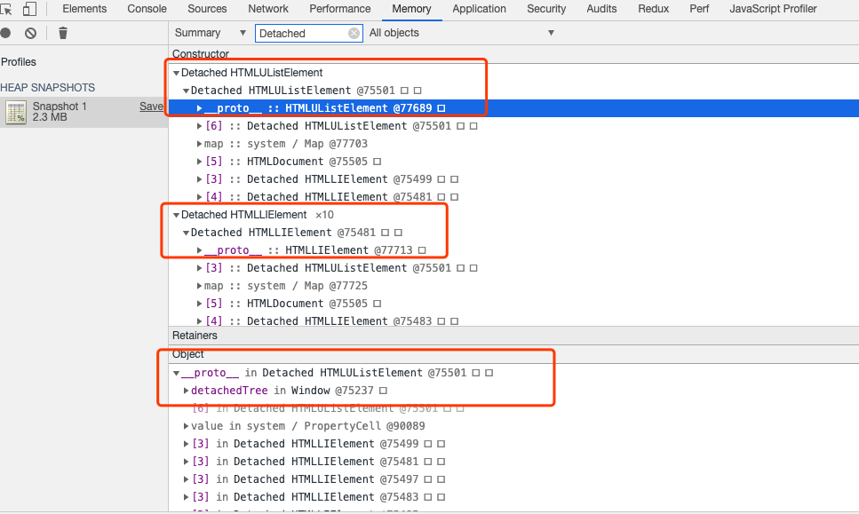
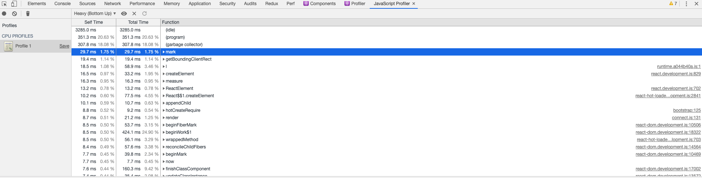

# JS 内存泄漏、监控和分析
# 前言
本人平时学习及收集内容，欢迎参入一起讨论。
# 内容
# 一、内存泄漏的定义以及为什么发生内存泄漏？
内存泄漏是指申请的内存没有及时回收掉，被泄漏了。
虽然前端有垃圾回收机制，但当某块无用的内存，却无法被垃圾回收机制认为是垃圾时，也就发生内存泄漏了
而垃圾回收机制通常是使用标志清除策略，简单说，也就是引用引用从根节点开始是否可达来判定是否是垃圾
上面是发生内存泄漏的根本原因，直接原因则是，当不同生命周期的两个东西相互通信时，一方生命到期该回收了，去被另一方还持有时，也就发生内存泄漏了
# 二、哪些情况会引起内存泄漏
- 意外的全局变量
- 遗忘的定时器
- 使用不当的闭包
- 遗漏的 DOM 元素
- 网络回调
# 2.1 意外的全局变量
全局变量的生命周期最长，直到页面关闭前，它都存活着，所以全局变量上的内存一直不会被回收
当全局变量使用不当，没有及时回收（手动赋值 null），或者拼写错误等将某个变量挂载到全局变量时，也就发生内存泄漏了
示例代码：
function foo(){
bar1 = 'some text'; // 没有声明变量 实际上是全局变量 => window.bar1
this.bar2= 'some text'; // 全局变量=> window.bar2
}
foo();
2
3
4
5
在这个例子中，意外的创建了两个全局变量 bar1 和 bar2
# 2.2 遗忘的定时器
setTimeout 和 setInterval 是由浏览器专门线程来维护它的生命周期，所以当在某个页面使用了定时器，当该页面销毁时，没有手动去释放清理这些定时器的话，那么这些定时器还是存活着的
也就是说，定时器的生命周期并不挂靠在页面上，所以当在当前页面的 js 里通过定时器注册了某个回调函数，而该回调函数内又持有当前页面某个变量或某些 DOM 元素时，就会导致即使页面销毁了，由于定时器持有该页面部分引用而造成页面无法正常被回收，从而导致内存泄漏了
如果此时再次打开同个页面，内存中其实是有双份页面数据的，如果多次关闭、打开，那么内存泄漏会越来越严重
而且这种场景很容易出现，因为使用定时器的人很容易遗忘清除
代码如下：
var serverData = loadData();
setInterval(function(){
var render = document.getElementById('render');
if(render){
render.innerHTML = JSON.stringify(serverData);
}
},5000)
2
3
4
5
6
7
如果后续 renderer 元素被移除，整个定时器实际上没有任何作用。但如果你没有回收定时器，整个定时器依然有效, 不但定时器无法被内存回收， 定时器函数中的依赖也无法回收。在这个案例中的 serverData 也无法被回收。
# 2.3 使用不当的闭包
函数本身会持有它定义时所在的记法环境的引用，但通常情况下，使用完函数后，该函数所申请的内存都会被回收了
但当函数再返回一个函数时，由于返回的函数持有有外部函数的词法环境，而返回的函数又被其他生命周期东西所持有，导致外部函数虽然执行完了，但内存却无法被回收
所以，返回的函数，它的生命周期应尽量不宜过长，方便该装饰能够及时被回收
正常来说，闭包并不是内存泄漏，因为这种持有外部函数词法环境本就闭包的特性，就是为了让这块内存不被回收，因为可能在未来还需要用到，但这无疑会造成内存的消耗，所以，不宜烂用就是了
相关代码：
var theThing = null;
var replaceThing = function(){
var originalThing = theThing;
var unused = function(){
if(originalThing){ // 对于 'originalThing'的引用
console.log('hi');
}
};
theThing = {
longStr: new Array(100000).join('*'),
someMethod:function(){
console.log('message');
}
}
}
setInterval(replaceThing,1000);
2
3
4
5
6
7
8
9
10
11
12
13
14
15
16
# 2.4 遗漏的 DOM 元素
DOM 元素的生命周期正常是取决于是否挂载在 DOM 树上，当从 DOM 树上移除时，也就可以被销毁回收了
但如果某个 DOM 元素，在 js 中也持有它的引用时，那么它的生命周期就由 js 和是否在 DOM 树上两者决定了，记得移除时，两个地方都需要去清理才能正常回收它
# 2.5 网络回调
某此场景中，在某个页面发起网络请求，并注册一个回调，且回调函数内持有该页面某些内容，那么，当该页面销毁时，应该注销网络的回调，否则，因为网络持有页面部分内容，也会导致页面部分内容无法被回收
# 三、内存泄漏的识别方法
- 使用 Chrome 任务管理器实时监视内存使用打开 chrome 浏览器
- 利用 Chrome 时间轴记录可视化内存泄漏
- 使用堆快照发现已经分离 DOM 树的内存泄漏
- 按函数调查内存分配打开面板
具体分析和监控可参考讲讲 js 的内存泄漏、如何监控和分析 (opens new window)
# 3.1 使用 Chrome 任务管理器实时监视内存使用打开 chrome 浏览器
点击右上角主菜单，选择更多工具->任务管理器，这样就开启了任务管理器面板，然后再右键点击任务管理器的不及格标题并启用 JavaScript 使用的内存，能看到这样的面板：
下面两列可以告诉您与页面的内存使用有关的不同信息：

内存占用空间(Memory)列表示原生内存。DOM 节点存储在原生内存中。如果此值正在增大，则说明正在创建 DOM 节点。JavaScript使用的内存(JavaScript Memory)列表表示 JS 堆。此列包含两个值。您感兴趣的值是实时数字（括号中的数字）。实时数字表示您的页面上的可到达对象正在使用的内存量。如果此数字在增大，要么是正在创建新对象，要么是现有对象正在增长。
当你页面稳定下来之后，这两个的值还在上涨，你就可以查一查是否内存泄漏了。
# 3.2 利用 Chrome 时间轴记录可视化内存泄漏
Performance(时间轴)面板能够直观实时显示 JS 内存使用情况、节点数量、监听器数量等。
打开 Chrome 浏览器，调出调试面板(DevTools)，点击Performance选项(低版本是 Timeline)，勾选 Memory 复选框。一种比较好的做法是使用强制垃圾回收开始和结束记录。在记录时点击 Collect garbage 按钮 (强制垃圾回收按钮) 可以强制进行垃圾回收。 所以录制顺序可以这样：开始录制前先点击垃圾回收-->点击开始录制-->点击垃圾回收-->点击结束录制。 面板介绍如图：

录制结果如图：

首先，从图中我们可以看出不同颜色的曲线代表的含义，这里主要关注 JS 堆内存、节点数量、监听器数量。鼠标移到曲线上，可以在左下角显示具体数据。在实际使用过程中，如果您看到这种 JS 堆大小或节点大小不断增大的模式，则可能存在内存泄漏。
# 3.3 使用堆快照发现已经分离 DOM 树的内存泄漏
只有页面的 DOM 树或 JavaScript 代码不再引用 DOM 节点时，DOM 节点才会被作为垃圾进行回收。如果某个节点已从 DOM 树移除，但某些 JavaScript 仍然引用它，我们称此节点为“已分离”，已分离的 DOM 节点是内存泄漏的常见原因。
同理，调出调试面板，点击 Memory，然后选择 Heap Snapshot，然后点击进行录制。录制完成后，选中录制结果，在 Class filter 文本框中键入 Detached，搜索已分离的 DOM 树。 以这段代码为例：
<html>
<head>
</head>
<body>
<button id="createBtn">增加节点</button>
<script>
var detachedNodes;
function create() {
var ul = document.createElement('ul');
for (var i = 0; i < 10; i++) {
var li = document.createElement('li');
ul.appendChild(li);
}
detachedTree = ul;
}
document.getElementById('createBtn').addEventListener('click', create);
</script>
</body>
</html>
2
3
4
5
6
7
8
9
10
11
12
13
14
15
16
17
18
19
20
21
22
点击几下，然后记录。可以得到以下信息：

旧版的面板，还会有颜色标注，黄色的对象实例表示它被 JS 代码引用，红色的对象实例表示被黄色节点引用的游离节点。上图是新版本的，不会有颜色标识。但是还是可以一个个来看，如上图，点开节点，可以看到下面的引用信息，上面可以看出，有个 HTMLUListElement(ul 节点)被 window.detachedNodes 引用。再结合代码，原来是没有加 var/let/const 声明，导致其成了全局变量,所以 DOM 无法释放。
# 3.4 按函数调查内存分配打开面板
点击 JavaScript Profiler,如果没看到这个选项，你可以点调试面板右上角的三个点，选择 more tools，然后选择。
操作步骤：点 start->在页面进行你要检测的操作->点 stop。

DevTools 按函数显示内存分配明细。默认视图为 Heavy (Bottom Up)，将分配了最多内存的函数显示在最上方，还有函数的位置，你可以看看是哪些函数占用内存较多。
# 参考资料
- 前端面试：谈谈 JS 垃圾回收机制 (opens new window)
- Node.js 内存管理和 V8 垃圾回收机制 (opens new window)
- 如何分析 Node.js 中的内存泄漏？ (opens new window)
- 浏览器垃圾回收机制与 Vue 项目内存泄漏场景分析 (opens new window)
- V8 引擎如何进行垃圾内存的回收？ (opens new window)
- 一文搞懂 V8 引擎的垃圾回收 (opens new window)
- V8 引擎垃圾内存回收原理解析 (opens new window)
- 13 | 垃圾回收：垃圾数据是如何自动回收的？ (opens new window)
- Chrome 浏览器垃圾回收机制与内存泄漏分析 (opens new window)
- 解读 V8 GC Log（一）: Node.js 应用背景与 GC 基础知识
- 解读 V8 GC Log（二）: 堆内外内存的划分与 GC 算法
# 联系作者
平凡世界，贵在坚持。

← js 内存管理 事件循环和异步编程的崛起 →